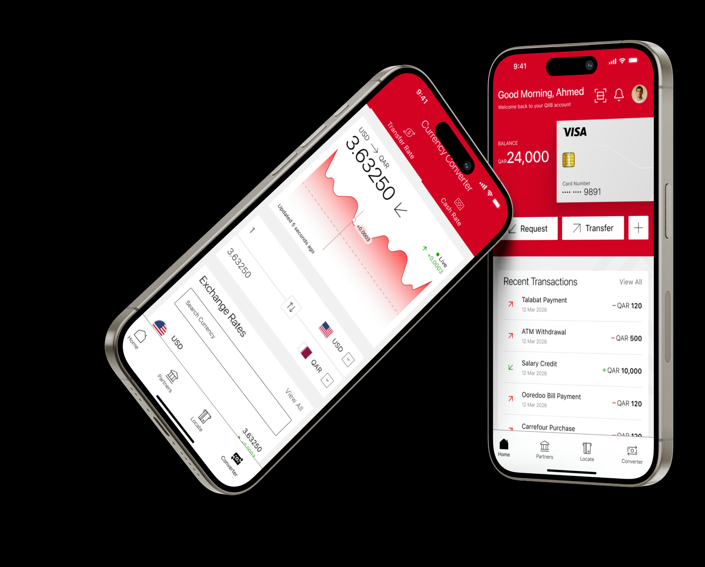
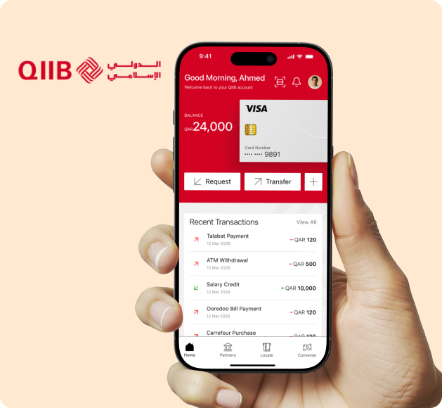

Redefining the digital banking experience
Designed for speed, security and simplicity.

Project overview
QIIB — Qatar International Islamic Bank — needed its mobile banking app redefined for speed, security and simplicity, delivered at Sundew Solutions.
Overview — still needs the context slides
The sentence above is assembled from the title slide and the agency credit on it. What is still missing: what state the app was in before, what QIIB actually asked for, and what your specific remit was. Mark the load-bearing words with <b> and the two-tone effect does the rest.
- Project
- Mobile Banking Onboarding
- Year
- 2025
- Client
- QIIB
- Delivered at
- Sundew Solutions
- Topic
- Research UX/UI Design Design System
Problem & solution
What was breaking, and what fixed it
One or two sentences framing the problem, from the deck's problem slides.
Problem — from the problem slides
Banking onboarding usually breaks on identity verification, document capture or a regulatory step — but use what the deck says, not what is typical. Any drop-off or support-volume figure it records is the strongest sentence on this page.
Solution: 01
First design response, and what it changed for the person filling the form.
Solution: 02
Second design response.
Solution: 03
Third design response.

Research
What the work was grounded in
Research — from the research slides, if any exist
Method and sample size, stated plainly. If no research was run on this project, delete this section and the stats below rather than filling them: an absent research section reads as scope, an invented one collapses the first time anyone asks.
—
Metric name
—
Metric name
—
Metric name
Stats — do not invent these
Set each figure and its --b-fill (0–100) from the deck. If the deck has no numbers, delete the three stats entirely — the page is stronger with scope claims than with figures nobody can source.
Design process
How the work ran
Adjust the phases, durations and tags to match what actually happened on this project.
Research
—Design
—Delivery
—Visual language
Type and colour
Bricolage
Grotesque
ABCDEFGHIJKLMNOPQRSTUVWXYZ abcdefghijklmnopqrstuvwxyz 0123456789 ﷼ £ $ &
Aa
Aa
Aa
Typeface — this is the case study page's face, not the app's
Bricolage Grotesque is what this site is set in. If the deck names the typeface the QIIB app actually uses, swap this specimen for that one.
Colour
Sampled from the project's own artwork rather than chosen — the percentages are that image's measured composition.
#D302226.9% of the artwork
#C003200.9%
#FFE9D162.3% — the dominant ground
#FFFFFF12.5%
#0101011.8%
The flow
Three screens before the first tap
Onboarding runs three screens deep and never traps anyone in it: Skip sits under every step, Back replaces it once you have moved, and the third screen swaps Continue for Get Started. Every headline and line of body copy below is the app's own.

-
Step 01 · Continue / Skip
Welcome to QIIB Mobile Banking App
"Experience secure and convenient banking designed for your everyday needs in Qatar."
The opening screen names the bank and the country and asks for nothing. Skip is offered immediately — an existing customer reinstalling the app should not have to read an introduction to it.
-
Step 02 · Get Started / Back
Bank Anytime, Anywhere with Confidence
"Manage accounts, locate ATMs, and explore partner services across Qatar right from your mobile."
The middle screen is where the app's four destinations are introduced — accounts, ATM locator and partner services are three of the four tabs the person will land on. Skip has become Back, because there is now somewhere to go back to.
-
Step 03 · Continue / Skip
Fast & Easy Everyday Secure Payments
"…money, pay merchants, and complete transactions instantly with secure digital banking."
The last screen is about doing rather than seeing — sending, paying, completing. It is the closest of the three to the home screen that follows it.
Two gaps in this section
Screen 03's body copy is clipped in the artwork I have — the first few words are behind the middle device. And the deck's own reasoning for a three-screen introduction is not in any slide I have seen. Both are one sentence each from the deck.
Outcome
What shipped, and what it changed
Outcome — from the closing slides
What was delivered and at what scale. The works card in js/data.js still carries a TODO for the same figure: how many components, screens or products the QIIB system covered. One number completes both.
High-fidelity designs
Onboarding, end to end

Screens
The work
Screens — two named, the rest still to export
The two below are the screens visible in the slides. Save the exports into public/Banking/ as qiib-home.png and qiib-converter.png and they appear automatically; until then each falls back to the works-grid artwork. The number in each note is load-bearing — it lets the writing refer to "screen 02" and be followed.
The app's four destinations
The tab bar in the slides names them: Home, Partners, Locate and Converter. Partners and Locate are not shown in any slide I have — export those two screens and this section becomes the whole app rather than half of it.

Thank you for reading.
Interested in the thinking behind this project? I'd be glad to walk through it.